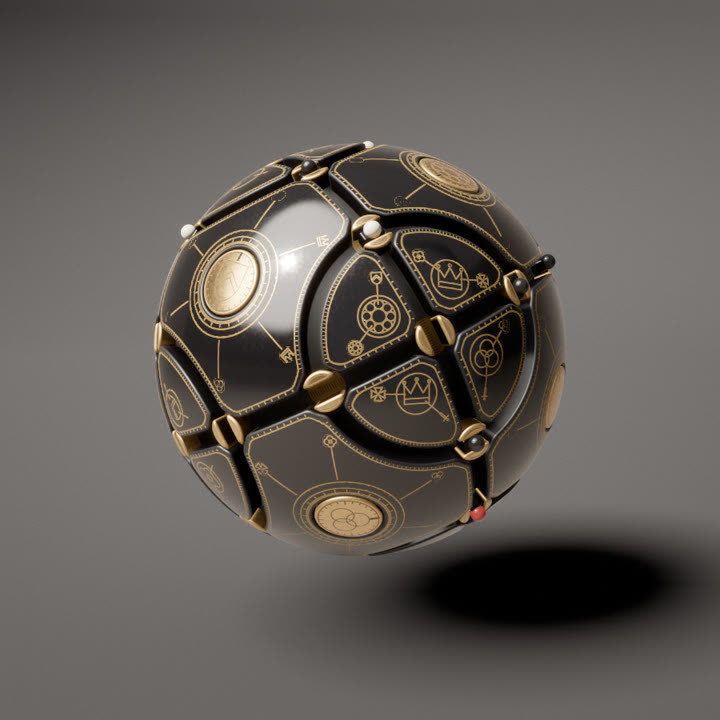
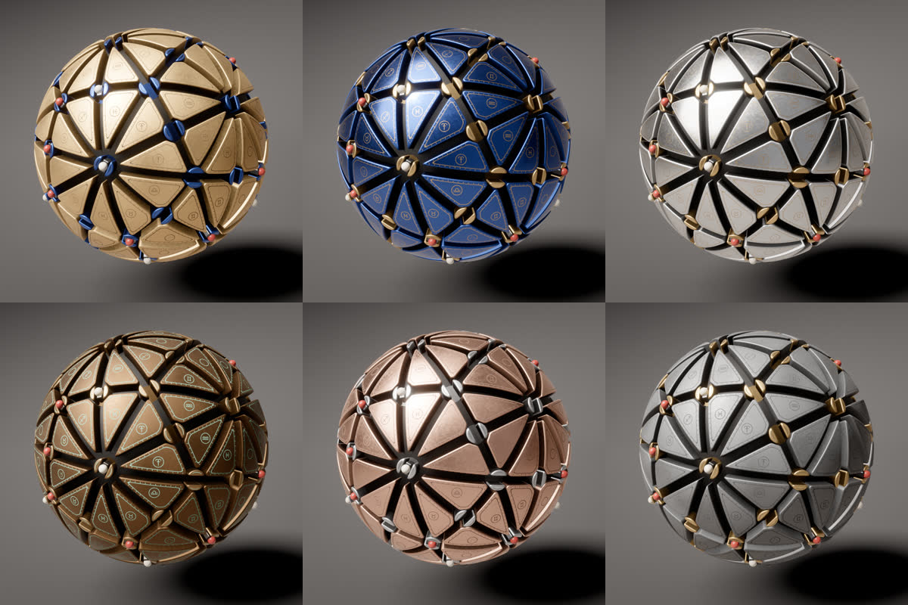
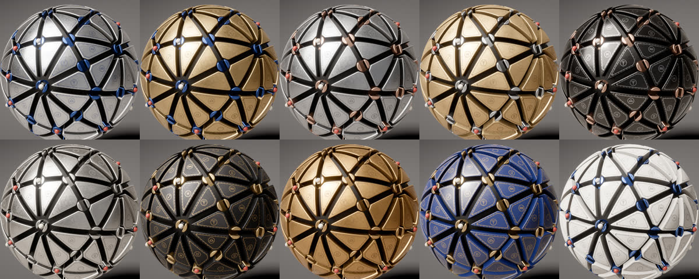

How the Orrery turns
An engraved metal sphere whose surface is a working mechanism. Channels run round it along great and small circles, a turntable sits at every crossing, and carriages carry coloured beads from crossing to crossing in clockwork ticks. Press R and it comes apart and rebuilds as a different machine. Here is how the layout, the plates, the machine, the engraving, the transformation and the sound are made.

A sphere that is a machine
Day 6's prompt was Orrery. An engraved metal sphere whose surface is a working mechanism: channels run round it along great and small circles, a turntable sits at every crossing, and carriages carry coloured beads from crossing to crossing in clockwork ticks. The beads sort themselves onto the circles of their colour, orbit together for a while, then scramble.
Turntables, dials and plates pop out on their rods, on their own or when clicked, showing their gears and a well with a sun and planet train underneath. Press R and the machine flies apart and reassembles into a new layout, in one of 22 finishes. Every layout is rendered in the Orrery Collection.
The layout is a set of circles on a sphere, and every plate between them is a distance field meshed into a bevelled tile. The engraving is drawn in the fragment shader from distance fields, the machine runs on a 1.4-second clock, and the shared pipeline renders it with motion blur and a supersampled still once it holds.
Circles on a sphere, and the plates between them
Every layout starts as a list of circles on the unit sphere. A circle is a plane, given by a normal n and an offset h: it is every point p on the sphere with p · n = h. With h = 0 the plane passes through the centre and cuts a great circle. Any other h cuts a smaller ring of radius √(1 − h²). Each circle becomes a channel 0.078 radians wide, a turntable sits wherever two channels cross, and each region left between the channels becomes a plate.
Two circles meet in at most two points, and crossings() solves for them in closed form. buildLayout compares each new crossing with the nodes it already has, and one within 10⁻⁴ radians of an existing node is merged into it. Where three or more circles meet (up to five in the icosahedral layouts), one turntable serves all of them. Each circle sorts its nodes by angle and links every node to the next one, which gives the edges. At each node the outgoing half-edges are sorted by angle. A plate is traced by walking one half-edge, turning at the far node to the half-edge just before the way back, and repeating until the walk is back where it started. Euler's formula for a sphere then has to hold, plates = edges − nodes + 2. When it fails, usually because the circles have split into groups that never touch, the layout is rejected.
The mechanism also needs room. In strict mode, two nodes closer than 0.3 radians reject the layout. So does a crossing where two channels meet at less than 0.62 radians (about 36°), a circle with fewer than three turntables to pass beads between, or a plate whose inradius is under 0.085 radians. The inradius is measured at the plate's centre with the same smoothed distance field that later builds the plate, before the dial hole is added. The random layout draws normals until one passes. Whatever layout is chosen, the final build runs with strict: false, and every preset passes the checks anyway.
There are 25 presets. Some are the great circles that a polyhedron's edges lie on: three for the octahedron, four for the cuboctahedron, six for the icosidodecahedron. “Octahedral mirrors” is the octahedron's nine mirror planes. The rest add more great circles, rings of a fixed angular radius around the vertex or edge axes of the regular solids, mixtures of the two, or globe-like parallels and meridians. The eleven dense ones set a mechanism scale between 0.75 and 0.55. It shrinks channel width, turntable radius and every spacing limit together, so “great icosahedral rings” fits 120 turntables and 122 plates within the limit of 128 of each. “Symmetric” picks one of 19 layouts from symmetric.js, generated offline as orbits of one or two rings under the tetrahedral, octahedral or icosahedral rotations. Every preset and symmetric layout is turned to a random orientation by rotateNormals, so it doesn't always face the camera the same way.
The default is “dodecahedral rings”: 20 rings of 28° around the dodecahedron's vertices, at mechanism scale 0.75, which gives 60 turntables and 62 plates. The Layout menu lists “symmetric” first, then every preset, and “random” last. Randomising with R picks “symmetric” or a preset, never “random”. The Circles slider, from 4 to 6 great circles, only shapes the random layout, so it is shown only while Layout is “random”.
Presets, built the way buildLayout builds them
Orthographic view of the presets' circles, with crossings, node merging, edges and the half-edge plate walk ported from buildLayout. Channels, turntables and their clearance cuts are drawn at the real angular sizes for the preset's scale. Each plate is a flat polygon shaded by the normal at its centre. The real plates are distance-field meshes with bevels and dials, and the dials are left out here. Point at a plate, or tap it, to see its sides and its inradius from plateField. “Dodecahedral rings” is the sketch's default layout. The last entry is the 15 mirror planes of the icosahedron, one of the symmetric layouts.
The random search
A port of randomNormalsSteps with the strict checks, run with its own seeded generator, so the attempts differ from the sketch's for the same seed. Each new normal is the best of 12 random directions, the one farthest from every circle so far (a normal and its opposite give the same circle). Six circles get 8 such attempts, and fewer get 40. After that the normals are the icosidodecahedral set, or the cuboctahedral one for four circles, turned at random with each normal tilted by a random tangent offset of up to 0.22 (about 0.22 rad), or 0.1 from attempt 200 on. Red marks what failed. If 400 attempts all fail, makeLayoutSteps uses the icosidodecahedral preset itself.
MAX_PLATES, the rows of the plate data texture), 128 turntables (MAX_NODES, the instanced meshes) and 24 circles (MAX_CIRCLES, the core shader's channel uniforms). The densest presets and symmetric layouts reach 120 turntables and 122 plates.Every plate is a distance field
A plate is whatever is left of the sphere between its channels. plateField describes it as one signed distance in radians, positive inside. Each channel wall contributes s·(asin(p·n) − asin(h)) − W/2, which is the exact angular distance to a great or small circle, pushed back by half the channel width W = 0.078. Each corner contributes angle(p, q) − RC, a round cut of 0.097 that leaves 0.009 of clearance round the 0.088 turntable. A dial adds a hole of its radius plus a 0.008 gap.
The terms are joined with a polynomial smooth minimum. Where two distances are within k = 0.022 of each other it subtracts h²·k / 4, with h = 1 − |a − b| / k, so every corner of the plate comes out rounded. All of these sizes shrink with the preset's scale, down to 0.55 for the densest layouts. The default layout, dodecahedral rings, runs at 0.75.
The mesh is grown from the plate's centre. Along each direction the field is sampled 21 times out to the plate's reach, and the first sign change after the peak is bisected 14 times to find the rim. 384 such rays trace the outline, and the rim samples are then spread by arc length plus 0.06 times the turning angle, so the rounded corners get more of them than the straight runs. A plate gets reach × 420 samples, clamped to 72 to 150, then scaled by 0.72 on the medium quality tier and 0.55 on low.
Every sample keeps its direction for the whole piece: a wall down to 0.02 below the channel floor, a quarter-circle bevel in four steps, each row found with a few secant steps, six top rings (evenly spaced when the plate has a dial, closing up toward the centre when it has none), and a closed underside of two strips. A plate gets a dial when it has room. The dial starts at its inradius minus 0.085, capped at 0.15, and shrinks by 0.006 until each of 48 rays round it reaches a field peak of at least 2.4 bevel widths.
One plate's field, and where its vertices go
A hand-built face, not one from a preset: two great circles and two small circles of 48° and 28° radius, at mechanism scale 1. It is drawn in an azimuthal equidistant projection about the plate's centre, so distances from the centre are true. Contours are 0.02 rad apart. The field, the dial search, the rim rays and the turn-weighted sample placement are ports of plateField, roomRoundDial and buildPieceSteps, with the plate's settings from main.js; this plate's reach of 0.56 asks for 234 samples, so on the high tier it gets the cap of 150. The bevel rows are only a few pixels inside the rim at this size, and the underside rows are left out.
The bevel across a channel
Distance across the channel is in radians and height is radius, which match closely this near R = 1, so the section is at true scale. Bevel row j sits where the field reaches BEVEL·(1 − cos θ), at radius R − BEVEL + BEVEL·sin θ, with θ = j/rows · 90° and the normal turned by θ from outward to up, which makes a quarter circle of radius 0.011. The wall's foot at 0.895 is the first row, 0.02 under the floor at RF = 0.915, so the wall runs on into the core.
p·n = h, asin(p·n) − asin(h) is the difference in latitude about its axis, which is the true angular distance. Great circles are the case h = 0.smin(RT − angle(p, pole), s·asin(z) − W/2), a disc cut by the channel's slot, built with 64 samples (48 on medium, 40 on low) and three top rings. buildCap adds a disc at RF + 0.006 that floors the slot.buildPieceSteps is a generator that yields every 48 rays and once per bevel row, so a rebuild after R can spread the work over several frames.Turn, then move, every 1.4 seconds
The mechanism runs in ticks of 1.4 seconds of machine time. Each tick has two phases. From 2% to 40% of the tick, the turntables turn: every turntable with a bead on it lines its slot up with the circle that bead wants next, and an empty one lines up with the circle a bead is about to arrive on. The slot is symmetric, so the shortest turn is never more than 90°. From 44% to 90%, every bead that has room moves one edge along its circle. The gaps either side are the pauses you hear between the clicks.
Both phases use clockEase, an in-out "back" ease with s = 0.9. It winds back 1.5% before it starts and overshoots by 1.5% before it settles, like an escapement letting go of a tooth. Every bead that moves also turns the dials on the plates either side of its channel by one notch of 15°, so the dials creep round as if they were geared to the beads.
Each bead has a colour, and each circle belongs to one colour. In sort mode, a bead on a circle of another colour switches at the first crossing with one of its own, then rides it in that circle's direction. When every bead is home the machine goes into orbit for 10 ticks, then scramble for 7, where each bead switches circle with a chance of 45% and reverses with a chance of 30%. Then it sorts again. A sort that has made no move for 6 ticks, or has lasted 60, skips to the last 3 ticks of a scramble.
Clicking a turntable pops it out on its rod: up with a 5% overshoot, a full turn while it is up, and back down, over 1.25 seconds. A full turn is the least it can do, because half a turn of a symmetric slot looks like no turn at all. A bead on it leaves on the other circle, and ignores sorting for 3 ticks. Dials pop the same way over 1.8 seconds and plates over 2.4. A plate with a symmetric outline may turn only part of the way, as the next section explains. The machine also pops parts out on its own, 0.3 a second of machine time by default: the Pop-outs slider gives that rate directly up to 0.5, then climbs steeply to 25 a second at its top, when thirty or more parts are out at once. A plate it picks that is blocked gets a few more tries at others.
The machine on a cuboctahedral map
The four great circles of the cuboctahedral layout (normals (±1, ±1, ±1)): 12 turntables, 24 edges, 14 plates and 5 beads in 3 colours, the sketch's density of 0.45. It is drawn as an azimuthal map around the top square plate, so distance from the centre is the angle on the sphere; past the dashed ring is the far side, stretched. The tick logic, rules, eases and pop timings are machine.js ported as is. Plates don't pop here, and the dial of the bottom plate, which the map spreads round its rim, is not drawn. Turntables and beads are drawn about 2.5 times their size; dials are drawn at their size. The sphere doesn't mark which colour owns a circle; the thin line inside each channel does that here. Click a turntable or a dial to pop it. The Scramble button starts a scramble at once; the sketch has no such control and scrambles only in its own cycle.
clockEase(t) = inOutBack(t, 0.9) // −1.5% wind-up, +1.5% overshoot
// a pop's lift over its duration u ∈ [0, 1]; a turntable's full turn runs from 0.24 to 0.74 with inOutCubic (dial 0.2 to 0.78, plate 0.22 to 0.76)
lift(u) = u < 0.24 ? outBack(u / 0.24) : u < 0.74 ? 1 : 1 − inOutCubic((u − 0.74) / 0.26)
outBack(t) = 1 + 2.2·(t − 1)³ + 1.2·(t − 1)²
popScale = Speed (at least 0.05) in machine time, so they keep their pace in real time. Auto pops are counted in machine time, so they come Speed times as often.Parts that rise on rods
Click a turntable, a dial or a plate and it rises out of the sphere, turns in the air and settles back. Turntables and dials turn a full revolution. A plate whose outline has k-fold symmetry may turn any m/k of a turn, m from 1 to k, because it still fits its hole: when the machine starts it rotates each plate's distance field about its centre by a turn over k, for k from 12 down to 2, and keeps the largest k that maps the outline onto itself. Triangles get 3, squares 4, pentagons 5, the lens-shaped plates of the ring layouts 2; plates of random layouts have none and always turn the full way. All three follow the same lift curve in liftOf(). For the first 24% of the pop the part rises with an out-back ease that overshoots by about 5%. It holds at full height until 74%, then comes down with a cubic in-out. The spin, also a cubic in-out, runs over about the same stretch: exactly the hold, 24 to 74% of the pop, for a turntable, but 20 to 78% for a dial and 22 to 76% for a plate, so those two start turning before they have finished rising and are still turning as they start down. A pop takes 1.25 s for a turntable (POP_TIME), 1.8 s for a dial and 2.4 s for a plate. Turntables and dials rise 0.15 on a sphere of radius 1 (POP in main.js, and the dial shader's popHeight uniform). Plates go higher, 0.21 (PLATE_POP), to clear the beads.
A turntable that carries a bead turns the shortest way to line its slot up with the other circle, plus a full revolution. Its slot is symmetric, so a half turn on its own would look like no turn at all. Lifting it shows what was under it: a 32-tooth crown wheel inside its skirt and a shaft of radius 0.019 down to ROD_BOTTOM, which is 0.4 below the core. Lower on the shaft, an 18-tooth wheel turns at −1.7 times the turntable's angle. Nothing meshes with it; it sits on the same shaft and just turns the other way, faster. Dials have the same pair, a rim gear plus a lower wheel at 0.62 of its radius spinning at −1.7. Each plate has a ring gear on one central rod, or on three pins when a dial sits in its middle.
While a part is up, the core opens under it. Each frame updateInstances() collects the openings: a cap of 0.097 rad (RC, at mechanism scale 1) for a turntable, the dial's radius plus its gap for a dial, and plateHole() for a plate. They go into shared.holes, up to 8, and the core's fragment shader discards every pixel with dot(p, c) > cos(r). A well 0.12 deep goes into each opening, with a sun gear and three planets on its floor, all scaled to the opening's radius. The well's instance matrix takes its columns as e1, c and −e2 of the opening, which is right-handed. Built from e1, c and e2 it was mirrored, and three.js then flipped the winding and culled the walls seen from inside, so the sphere looked see-through where a part was up.
Seated, these gears are covered, so they cost almost nothing. In displace() they collapse to a single point and rasterise no pixels. Plate gears collapse while their plate and dial both have zero lift and no flight. Turntable gears collapse while their instance has no offset and unit scale. A sun gear never meets that test, because its matrix is scaled down to its opening. When no wells are out, their meshes are hidden altogether.
A sun and three planets in a well
Drawn in units of the opening's radius, as trainGear() builds it before scaling. Sun and planets are the same gear: 14 teeth, tip radius 0.3, depth 0.07, from buildGear() in layout.js, which places 4 ring points per tooth at 0.22, 0.36, 0.64 and 0.78 of the tooth step: root (radius − depth), tip, tip, root. The sun turns at 0.9 rad per second of machine time. Planet j sits at angle φ = j · 120° and distance 0.54, turned by −sun − 2φ − π − step/2, so it turns at the same rate the other way. The half step puts a planet gap opposite each sun tooth, and −2φ makes up for where round the sun the planet sits. The 0.54 spacing leaves 0.01 between a tip and the opposite root. Change the phase and the teeth run through each other; the marker tests the two outlines against each other every frame. Simplified: a flat top view with no shading; the well's wall and the gears' thickness are left out.
One pop, three parts
Height above the seated position, in units of the sphere's radius, against wall-clock seconds. It is liftOf() times POP or PLATE_POP. The lower strip is the spin each part makes while it is up, from pop(), popDial() and popPlate(), drawn as a full revolution. A plate with k-fold symmetry may stop at m/k of it. Durations are multiplied by the Speed setting and the machine clock runs at Speed too, so a pop takes the same time at any speed. The turntable's extra alignment turn, when it carries a bead, is left out.
u < 0.24 : outBack(u / 0.24) // 1 + 2.2 (t − 1)³ + 1.2 (t − 1)², peaks at 1.053
u < 0.74 : 1
else : 1 − inOutCubic((u − 0.74) / 0.26)
RF − 0.4 = 0.515. At a plate's full lift of 0.21 its foot is at 0.725, still inside the core at 0.915.MAX_HOLES is 8: the core can show eight wells at once. Plates whose swept discs could meet never go up together.−1.7 · ψ every frame from the turntable's angle ψ. Crown 32 teeth, counter 18.lift(n) and rises 0.15 with it, carriage and all.Lines cut in the fragment shader
Nothing engraved on the orrery is a texture, apart from one atlas of motifs. Each part's fragment shader works out a single distance d from the pixel to the nearest engraved centreline, measured as an angle on the unit sphere. On a plate that means a rule 0.027 inside the rim, graduations along every channel at each 2° of its orbit with a long one every 10°, a ring and 24 ticks round the dial, a belt of small motifs between two rules where the plate has room, and spokes from the dial towards each turntable that end in a motif where there is room, or in a small ring where there isn't. All of these sizes are multiplied by mechScale, which shrinks the whole mechanism on the dense layouts.
One call to machineGroove(s, d, hw, depth) then cuts the lot, with a half width of 0.0022 and a depth of 0.0012 on a plate. It tilts the normal on the groove's walls. The slope comes from the gradient of d², because d has a kink on the centreline that screen derivatives can't follow, while d² is smooth there. Where two lines meet, the minimum jumps from one to the other, so any gradient steeper than a true distance allows (3d + fw) is clipped. The tilt is scaled by vis², with vis = smoothstep(1, 3, hw / fw), so a groove narrower than a couple of pixels loses its walls before they can sparkle.
The function also returns how much of the pixel lies inside the groove, and that fraction blends albedo, metalness and roughness towards the inlay and darkens occlusion by up to 35%. A line thinner than a pixel, sampled once at each pixel centre, is hit in some pixels and missed in the ones next to them, so it breaks into a row of dots. The fix is to give it a half width of at least half a pixel, w = max(hw, fw / 2), so it is never narrower than a pixel, and dim it by hw / w so it carries about the same amount of ink. Last, machineSpecularAA (Tokuyoshi and Kaplanyan) raises the roughness where the normal changes within a pixel, so the walls of a fine groove read as a duller line instead of flickering highlights.
Every one of these pixel-size estimates (the groove's fwidth, the specular kernel, the motifs' motifPixel and the milled walls' fade) is multiplied by a shared uniform, detailScale. It is 1 while anything moves. Once the view has held still for 0.4 s it drops to 0.25, so the engraving is drawn as if its pixels were a quarter of the size, and the pipeline averages jittered frames of it (64 on high, 16 on medium, 8 on low) to filter that finer detail. That is supersampling spread over frames, at the same resolution.
Thin lines, three ways
Eight lines with half widths from 1.6 down to 0.06 units, tilted by 0.07 so they cross the pixel grid at every phase, drifting slowly up and down. The slider sets how many units one pixel covers, as if the camera moved away. Each pixel is shaded once at its centre. The left panel uses the same smoothstep edge without the widening, the middle is machineGroove's coverage, and the right averages 6 × 6 samples of the hard-edged line. fwidth(d) is taken as exactly one pixel, which is what it measures for a distance along the pixel axes; the shader reads it from screen derivatives.
fw = fwidth(d)
w = max(hw, fw · 0.5)
cut = (1 − smoothstep(w · 0.55 − fw · 0.5, w + fw · 0.5, d)) · hw / w
// slope of the walls, from d² which is smooth through the centreline
g = ∇(d²), clipped to a length of at most 3d + fw
n = normalize(n − depth · 3 (1 − clamp(d / hw, 0, 1)) / hw² · vis² · g)
The open metal between the dial and the spokes gets one of four engine-turned guilloche patterns, chosen per plate from its index and the seed: waves (rings 0.0055 apart, rippled by sin 24θ), a sunburst of 240 rays, a basket weave of two diagonal line sets 0.007 apart, or a rosette of crossed spirals. machineTurned folds two continuous phases into a distance to the nearest line and cuts it 0.0004 deep with a half width of 0.15 of the spacing. For its coverage, machineLines takes the running integral of evenly spaced lines, 0.3 of the spacing wide, and differences it across the pixel's footprint, which gives the exact box filter of the lines over the pixel. Where the lines are a few pixels apart they read as lines; as they close in on the pixel size they soften into their average, 30% coverage, a plain sheen that can't beat against the grid. The grooves only tilt the normal while the lines resolve, scaled by 1 − smoothstep(0.15, 0.4, density). The footprint is always the whole pixel, also on a settled still, where detailScale leaves the guilloche alone and the average of jittered frames softens it a little more. The density comes from fwidth of the continuous phase, because the folded distance's derivatives jump at every fold. Angles from atan use machineAngleWidth, the smaller of fwidth(θ) and fwidth(θ wrapped by 2π): the two readings jump at opposite sides, so one of them is always clean.
The motifs are distance fields to their stroke centrelines in a unit disc, built from five primitives: segments, rings, dots, arcs and star polygons. There are 40 of them in five sets of eight: geometric, arcane, medieval, sidereal, and alien crop-circle pictograms whose counts, sizes and turn come from the seed. Compiling all 40 into every engraving shader and branching to the right one per pixel would be slow, so they are drawn once per seed into a 1024 × 640 R16F atlas, a 128-pixel cell each over [−1.15, 1.15]. The atlas stores squared distance, because bilinear filtering of the V shape of |d| raises its minimum on the centreline and d² filters smoothly. motifPick gives each part its motif from an integer hash of the part and the seed (a sine hash would amplify tiny differences from pixel to pixel), choosing among 1 + floor(variety · 7.999) of the eight. motifAt fades a motif out as its radius drops from 7 to 3.5 pixels, pushing its distance out by up to 0.6 of the radius so its strokes recede instead of breaking into speckles.
The motif sets, from their distance fields
All five sets of motifs.js, ported line for line and evaluated per pixel instead of through the atlas, then cut with machineGroove's coverage and motifAt's fade. Radius is the motif's radius in pixels; below 7 the strokes start to recede and at 3.5 the motif is gone. Stroke is the groove's half width as a fraction of that radius: about 0.07 on the smallest centre motif and 0.18 on the small motifs of a dial belt. Seed is motifSeed, which only the alien set and the arcane constellation (number 3) read. The GPU evaluates their sine hashes in 32-bit floats and this page in 64-bit, so a given seed draws different pictograms here than in the sketch.
partInlay. On black enamel, lapis, white enamel and ruthenium that is the plate's own colour, so the gold (or blued steel, or rose gold) parts are cut through to the plate's colour. Finishes without one fall back to the plate's inlay.2π / 180 of the channel's orbit. Every fifth is long, from 0.009 to 0.021 off the channel wall; the others start at 0.014.lowDetail uniform skips it entirely.detailScale only drops when nothing moves (paused, or Speed and Spin both 0), the camera is unchanged and no drag or zoom is under way. Any change sets it back to 1 and restarts the average.#ifdef PIPELINE_COLOR, so the shadow map and the prepass skip it entirely.Seven seconds to take it apart and put it back
A new shape doesn't swap in. startRebuild runs three states. In sink, 2.55 s, every part flies straight out along its own direction from the centre and dissolves. In swap, two rail fades of 0.8 s each, the bare black core's old channels thin to nothing and the new ones thicken in. Each layout's rails keep the width of its own mechanism while they fade, so when the dense default (dodecahedral rings, mechanism scale 0.75) replaces a full-size layout, the old channels thin from their full width and the new ones grow only to three quarters of it. In rise, 3.05 s, the new layout's parts fly back from 2.6 units out and seat themselves. Anything still popped out when it starts sinks back home over the first half second.
The order is a loose wave. The rebuild picks a random origin direction, and a part's delay is 0.4 s times its angle from that origin over π, plus its own random delay of up to 0.85 s. That one is squared, so most parts go close to their turn and a few straggle. Each part also flies for its own time, within 20% of 0.9 s going out and 1.05 s coming back. Plates leave 0.25 s after the turntables and beads, and come back 0.5 s before them. The rise draws a new salt and turns the origin, so the parts come back in a different order from the one they left in.
The random numbers come from partRandom(id, k), a sine hash of the part's id, the rebuild's salt and a channel k. It is stable for the whole phase, so the timing is a pure function of time and can be evaluated for any part on any frame, with no per-part state. The same functions place the sounds: up to 40 of the plates and turntables are voiced, spread evenly through the wave, each at its own launch or arrival time.
The sink also hides the work. The new layout's search and its geometry are one generator, layoutAndGeometry, stepped for at most 6 ms a frame while the old parts fly off. If it isn't finished at 2.55 s, the sink holds until it is. A new finish, bead set or motif set that comes with a new shape switches only during the swap, while nothing but the core is showing, so the old parts leave in their own finish and the new ones come up in the new one.
Every part's flight, on one clock
A sample layout of 14 plates, 12 turntables and 14 beads at random directions, timed with the sketch's lag, flightTime, launchAt, arriveAt and flightOf, and its rule for the rise's salt and origin. A bar's opacity is the part's opacity; click a row to pick it. The rails are setCoreCircles's staggered widths for 8 old circles at mechanism scale 1 and 8 new ones at 0.75, each layout at its own scale. The real rise brings back the new layout's parts, not the old ones, and the sink can run longer than 2.55 s while the new layout is still building. The plot's distance is out / 2.6, so the 0.03 kick and the 0.012 dip at the end barely show.
flightTime = base · (0.8 + 0.4 · r₂)
// going, k = (t − launchAt) / flightTime(0.9)
out = 0.03 · smooth(k / 0.15) + 2.6 · (max(k − 0.1, 0) / 0.9)^2.2 fade = 1 − smooth((k − 0.25) / 0.6)
// coming, k = (t − arriveAt + flightTime(1.05)) / flightTime(1.05)
out = 2.6 · (1 − k)³ − 0.012 · sin(π · clamp((k − 0.8) / 0.2)) fade = smooth(k / 0.5)
machineDissolve discards a fragment where a screen-space hash is above the part's opacity, so a fading part is still opaque. It casts thinning shadows and writes depth and velocity like any solid.smooth(1.6·w − 0.6·k / (n − 1)) of the fade weight w. The shader scales the channel's width by it, so each circle narrows to a line and vanishes a little after the one before it. The old circles' weights are also multiplied by previousScale, the old mechanism scale over the new one, so they keep their own width.Foley timed to the parts
Every sound is a one-shot cut from a CC0 recording on freesound.org: 68 short files in 15 sets, from a watch's tick and a crown being wound to tower-clock cogs, a press, levers, bolts and a ka-ching. play() picks a random variant of the set, never the same one twice in a row, multiplies the playback rate by 0.92 to 1.08 so repeats differ in pitch by up to 8%, and pans it to where the part sits on screen. At most 28 voices sound at once, and each set has a minimum gap between two starts, from 8 ms for a ratchet's click to half a second for the ka-ching, so a busy tick turns into a patter instead of a pile of copies.
Browsers only allow audio after the visitor does something, so the AudioContext is created on the first pointerdown, touchend, click or key, and only then are the files fetched and decoded. They run through a compressor at −16 dB and 3:1. While paused the context is suspended, so sounds already scheduled freeze with the animation.
While the machine runs, machineSound in main.js turns its events into sounds, with every delay divided by Speed because the machine's clock runs at Speed. The tick is the bar and its beat is an eighth of a tick, counted from the moment the turntables lock (40%); the beads arrive half a tick later (90%), so both land on the beat. The turntables turning together are one figure, four quick ratchet clicks on sixteenths, "tiki-tiki", up to a sharp clack as they lock. The beads moving together are the "swash": a marble rolling for each of the three most in view, looped for the whole move, its loudness following the clock easing, and a low latch, the "wah", as they all arrive. A dial stepping a notch ticks as its bead arrives. Pop-outs that come on their own wait for the next beat and last a whole number of beats, so they latch on one; each pops, whirrs and sounds through its turn: a ratchet for a turntable, a ratchet over a winding crown for a dial, and for a plate one of a freewheel or socket ratchet, a heavy pawl, big detents or a winding spring, then a clink as it seats. Outside machineSound, a short wind plays on the first beat of every tick and a long one every fourth, a Swiss watch ticks faintly on every beat (every other one past ten a second), accented on the lock and the arrival, and every 1.5 to 5.5 seconds a ratchet of 3 to 10 clicks runs somewhere in the works, starting on a beat and clicking on beats or half-beats. While a transformation plays, the watch runs on by itself at the same pace.
A transformation is scored all at once, at the start of each phase. rebuildSound lays down a crank every 1.1 to 1.5 seconds, a whirr for the whole phase and a slow 14-tooth ratchet. Then it sorts the plates and turntables by when each one leaves (or seats), with the same functions that fly them, and voices about 40 of them, stepping n / 40 through the sorted list; past ten parts the loudness is shared, as 0.38 / √(n / 10) with n capped at 40.
flight = base · (0.8 + 0.4 · r₂) // base 0.9 s going out, 1.05 s coming back
launchAt = lag + (plate ? 0.25 : 0) // turntables leave first
arriveAt = lag + flight + (plate ? 0 : 0.5) // and seat last
The score of one transformation
Six great circles, the Circles slider's default for the random layout, with uniformly random normals here (the sketch also spreads them apart or starts from a jittered symmetric set, which moves the parts but not their number): 30 crossings and 32 plates, each centred on the mean of its corners. The schedule is rebuildSound run with play()'s spacing rule, which is what setLogger would receive: launch times for the sink, then 1.6 s of rails fading during the swap, then arrival times for the new layout, with the wave's origin and salt advanced as the sketch does. Dot size is gain. With 62 parts the step is 1.55, and rounding in the running sum lets a 41st part through. The default layout, dodecahedral rings, has 62 plates and 60 turntables: the step is 3.05 and exactly 40 parts are voiced. The top row marks every part's launch or seat time; tall ticks are the voiced ones. The facing gain assumes a distant camera on the +z axis and pan is not drawn, and the swap is assumed to start on time (the sketch waits there if the new layout has not finished building).
A ratchet's clicks
ratchet() plays one click per tooth, at most 24, at t = ½ − cos(uπ) / 2 of the duration for u = (k + ½) / n. The clicks bunch in the middle of the turn, where a clockwork part moves fastest, and each is a quarter quieter at the ends than in the middle (the tick heights). A click closer than 8 ms to the last one kept is dropped by the ratchet set's spacing. The wheel here makes one whole turn in 1.4 s whatever the duration, so the motion can be followed.
Finishes and the studio
A finish is one entry in FINISHES, and there are 22 of them. Each sets the plate colour and roughness, the inlay that fills the engraving (colour, metalness, roughness), the turntable colour and roughness, and the carriage colour. Optional keys cover the rest: gear for the gears inside the core (the plate colour otherwise), plateMetal: 0 for the three enamels (black, white and lapis), and partInlay for the engraving on dials and turntables. On black enamel, lapis, white enamel and ruthenium that fill is the plate's own colour, so the dials and turntables carry the plate's colour in their engraving, champlevé style. The beads come in four sets of four colours: enamel (roughness 0.18), jewel (0.05), metal (0.14, fully metallic) and stone (0.5). A new finish is applied to the materials in place, with no rebuild; if a new shape is already on its way, it waits and arrives with the new parts.
The studio is the shared pipeline's: a key light from (−0.55, 0.8, 0.45) at intensity 16 and size 0.55, a cool fill at 0.32, floor 0.22, wall 0.3, ceiling 0.2, all tinted warm. Shadows are PCSS, fitted to the scene and denoised. AO runs at intensity 1 with a minimum of 0.04, GI at 1.2, and one analytic sphere occluder of radius 1 at the centre darkens the floor under the machine. The frame ends at exposure 1.1 with bloom 0.04, vignette 0.3 and grain 0.025. AO and GI start to fade at the camera's distance to the target plus 2.4 (plus 4.5 while parts are flying) and are gone 1.6 further on, so the far floor and the wall skip the trace.
Motion blur uses a 1/60 s shutter, 24 samples and a maximum of 0.03 of the screen, and it is switched off on the low and medium tiers, so it runs on high and capture. The prepass already holds every part's motion over the last frame, so the blur reuses that velocity instead of rendering the scene again, as long as the camera is still and the spin moves the front of the sphere less than 0.4 px a frame.
Once nothing moves, the frame settles into a supersampled still. That needs the machine paused (or Speed and Spin both at 0), the camera where it was last frame, and no drag or zoom under way, for 0.4 s. The shared detailScale uniform then drops to 0.25, so the engraving's pixel-size estimates (the groove's fwidth, the milled-edge fade, the specular antialiasing kernel and the motif's pixel size) act as if the pixels were a quarter of the size. The guilloche's line coverage still filters over the whole pixel. The pipeline averages jittered frames into one, 64 on high, 16 on medium and 8 on low, reusing the depth-of-field lens accumulator with zero aperture, and then stops rendering the scene: only bloom and the final pass run. If something restarts it while settled, it cross-fades from the image on screen over the first 24 samples. For this the day passes the pipeline a clock that only runs while something moves, and uploads instance matrices only when they change, because the pipeline reads an upload as motion. Temporal antialiasing was tried for the same job and dropped.
The 22 finishes
Each swatch is drawn from that finish's entry in FINISHES: the plate in its plate colour, with a border rule, a rosette and channel graduations in the inlay colour; the channel and the turntable's well in the core's black; the turntable in its colour with a ring engraved in partInlay (or the inlay); and beads from the chosen set on carriages. Click a swatch, or pick it from the menu, to read its values. Simplified: the colours are the hex values as written, shaded with a flat 2D gradient whose highlight narrows with lower roughness. The real ones are lit by the studio and pass through AgX.


Controls
- Click or tap a turntable to pop it out and send its bead onto another circle; a dial or plate pops out and spins.
- Drag orbits; scroll or pinch zooms.
- Layout: symmetric, one of the presets (dodecahedral rings by default), or random. Circles, 4 to 6, shows only for the random layout, the only one it shapes.
- Bead count: 0.2 to 0.6. Bead colours: 2 to 4.
- Finish: one of the 22 above, black enamel by default. Beads: enamel, jewel (the default), metal or stone.
- Motifs: the engraving set, arcane by default, with Motif variety from 0 to 1.
- Engraving: depth, 0 to 1.5.
- Speed: 0 to 3. Spin: 0 to 0.4.
- Pop-outs: how often parts pop out on their own.
- Supersample: 1 to 2, for the sharpest engraving at up to four times the cost.
- Auto change: seconds between new layouts, 30 by default; 0 turns it off.
- Quality, in the Rendering section: auto (which shows the tier it picked), high, medium or low; a change reloads the page.
- R flies apart into a new layout: symmetric or a preset, never random.
- M or the speaker button toggles sound.
- Space pauses, Tab hides the panel, F goes fullscreen, P saves a screenshot (Shift+P at 2×).